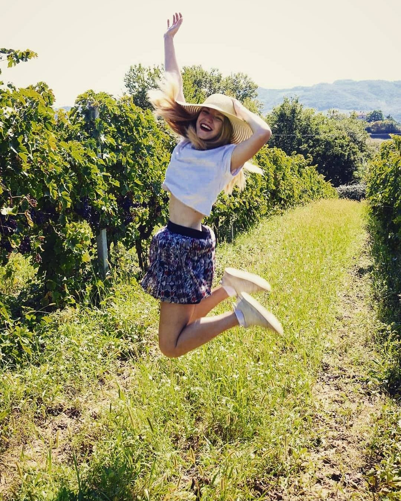
Chiara
Laureata in filosofia, ha portato in azienda quello che ha imparato lavorando nei campi con suo nonno e sua nonna: i segreti di un'agricoltura che segue i cicli naturali e sa ascoltare i bisogni della terra.
Siamo Chiara e Davide, cresciuti in famiglie con tradizioni agricole alle spalle.
Nel 2019 abbiamo deciso di unire le nostre conoscenze e la nostra passione per dare vita a Savia Terra, partendo da un'azienda presente da quattro generazioni nella Valdaso di Montalto delle Marche.
Volevamo preservare le tecniche di produzione tradizionali e valorizzare i prodotti locali. Così abbiamo trasformato un piccolo appezzamento di terra in un modello di agricoltura sostenibile e di qualità.
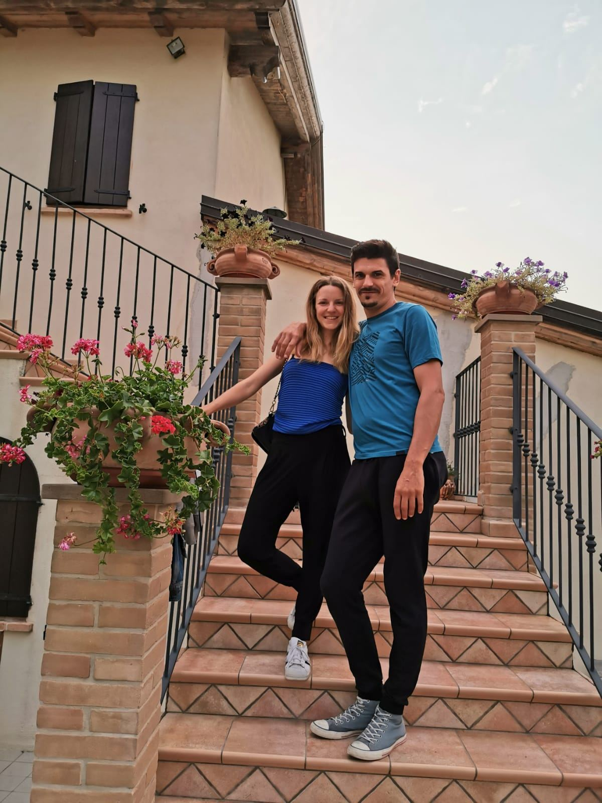

Laureata in filosofia, ha portato in azienda quello che ha imparato lavorando nei campi con suo nonno e sua nonna: i segreti di un'agricoltura che segue i cicli naturali e sa ascoltare i bisogni della terra.
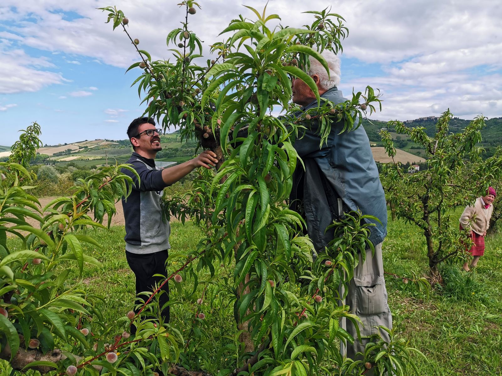
Appassionato di agricoltura e di informatica, ha sempre avuto un interesse particolare per le tecniche innovative di coltivazione e per il recupero delle varietà locali.
«Senza mai dimenticare l'indissolubile relazione che lega uomo e natura, mente e corpo, cultura e coltura.»
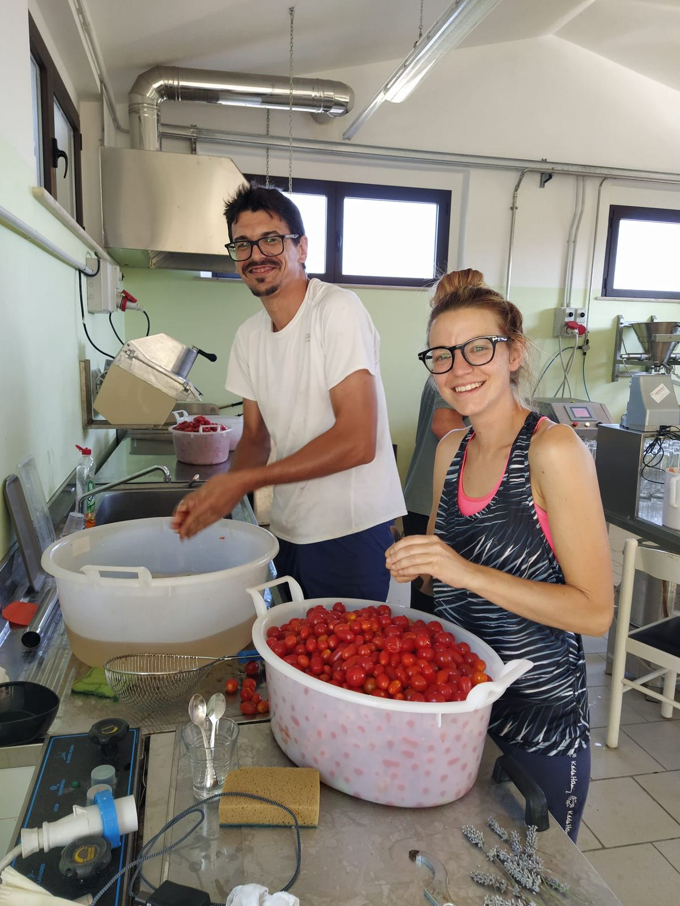
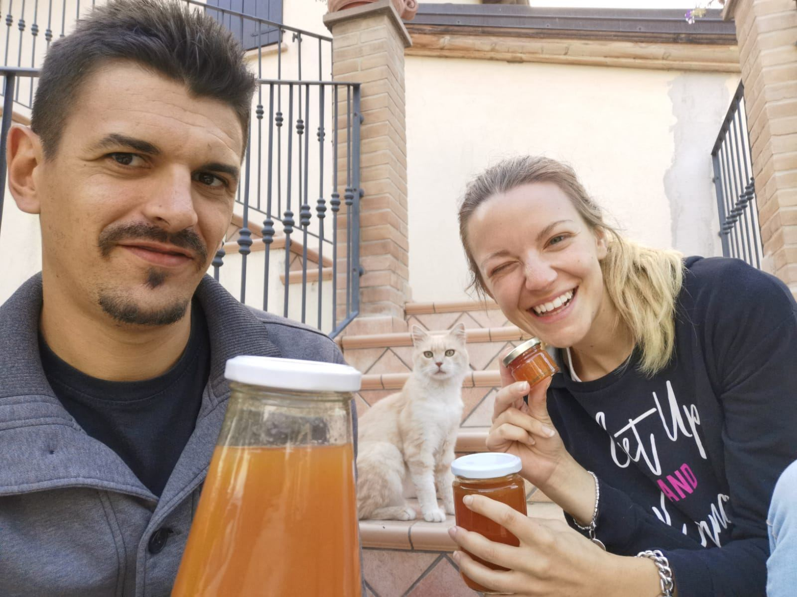
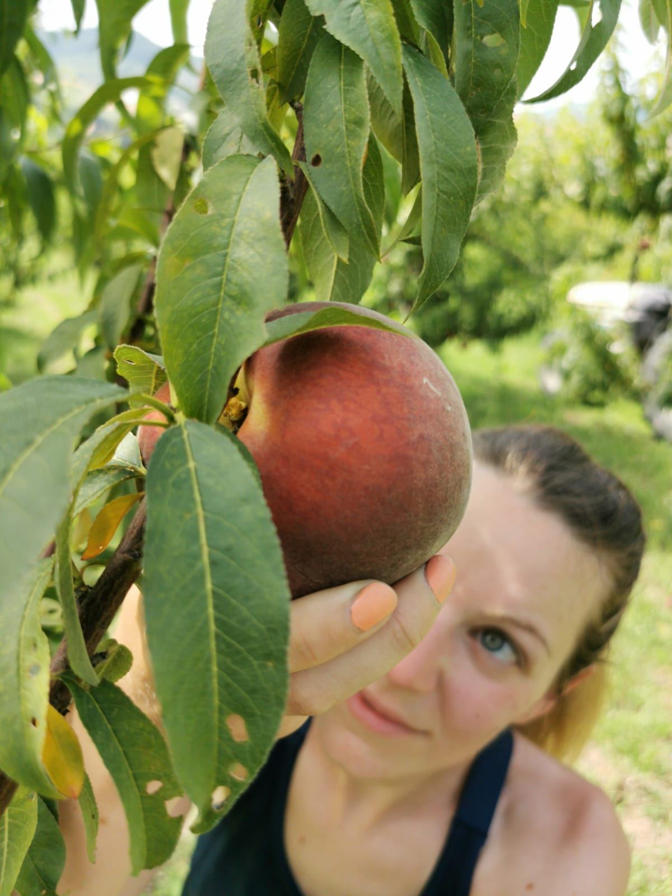
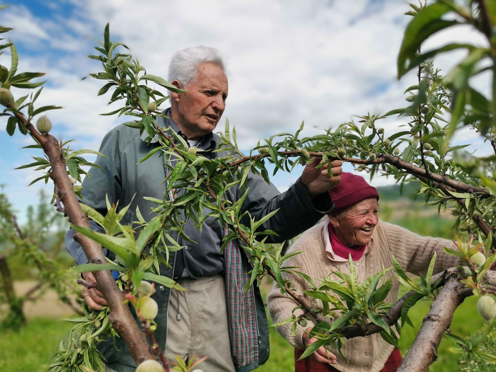
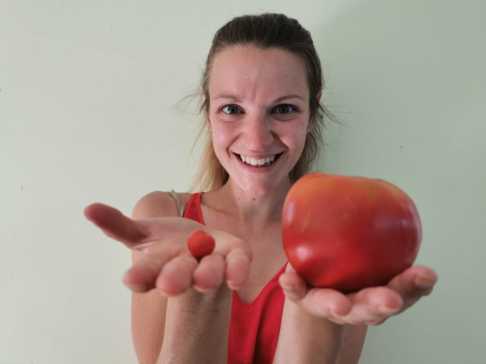
Coltiviamo frutta e ortaggi seguendo i principi della biodiversità e del rispetto per la terra e gli animali. Abbiamo anche un vigneto e una cantina per produrre vino con le nostre uve.
La stalla ospita bovini, asini, pecore, capre e galline. Completano il ciclo naturale della vita, ci fanno compagnia e danno fertilizzanti naturali ai nostri terreni.
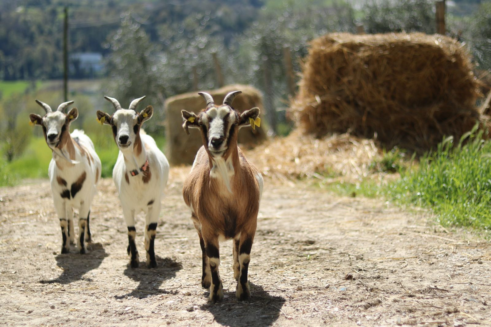
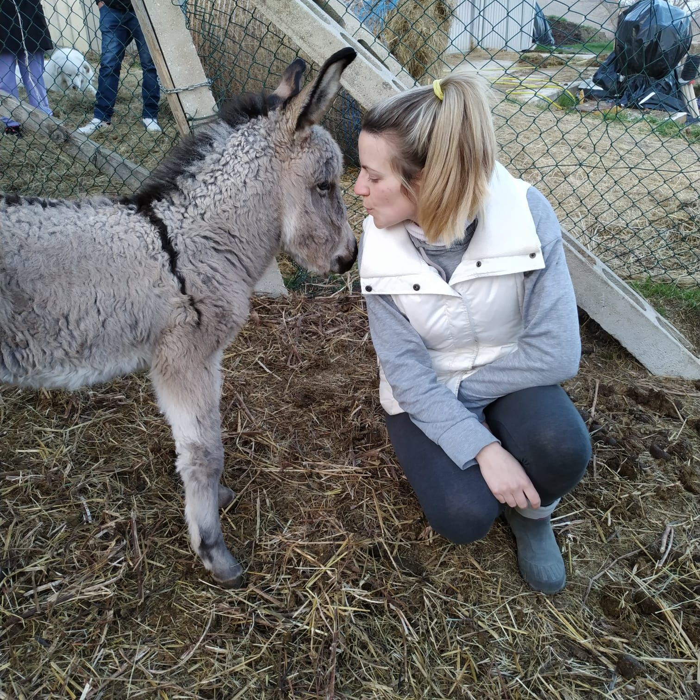
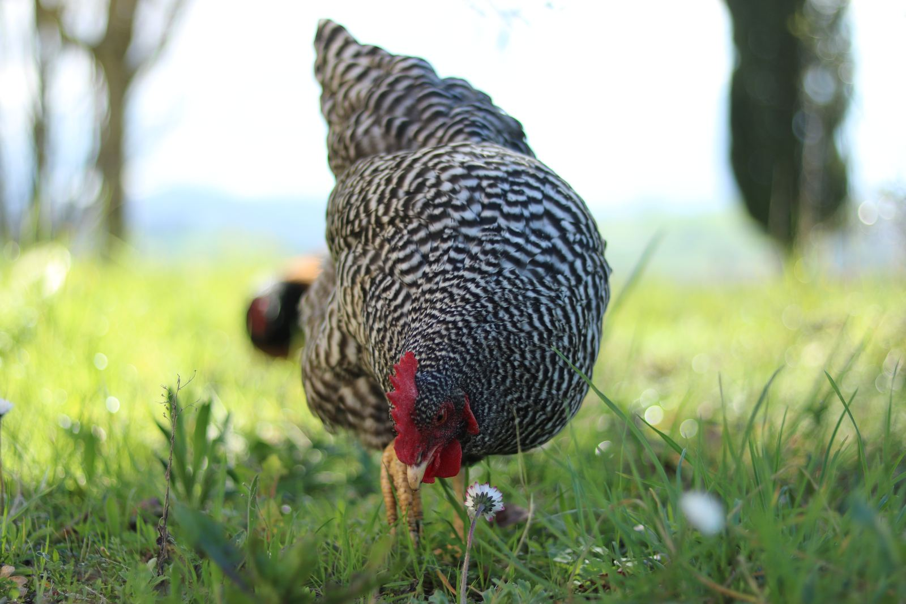